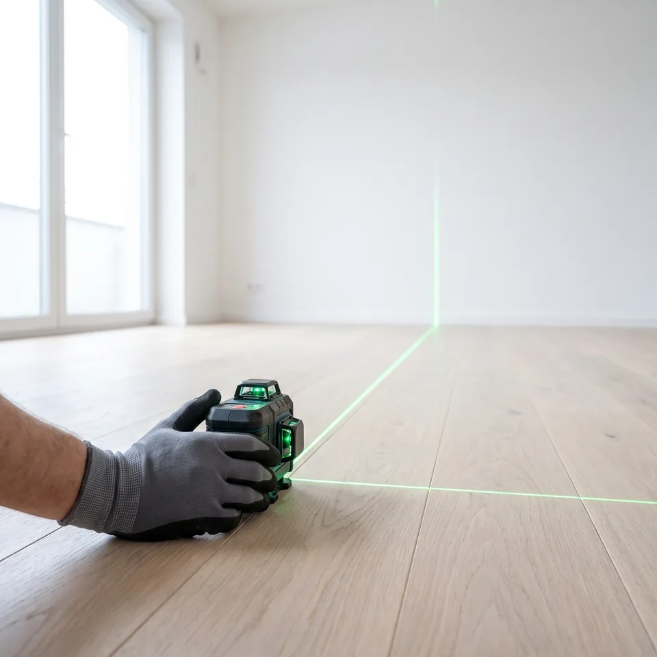
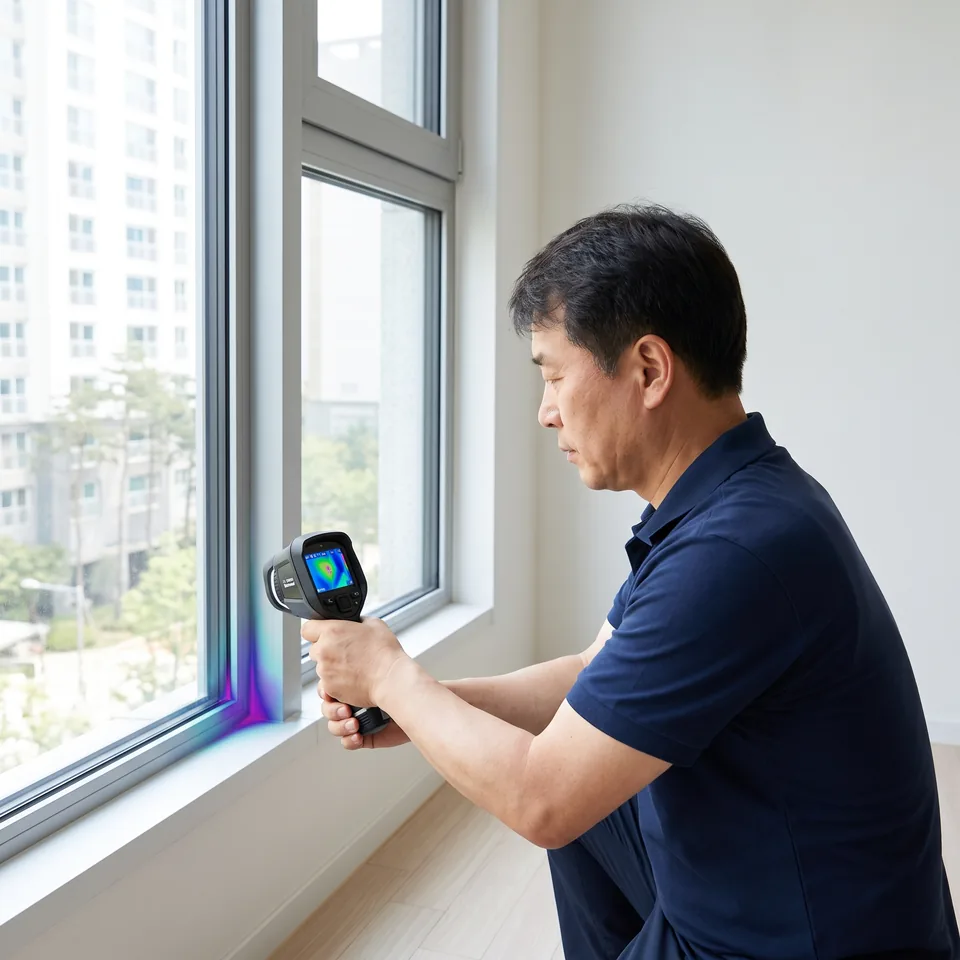

입주 전에 못 찾은 하자는 입주 후 내 비용이 됩니다. 열화상·레이저 레벨기로 세대 전체를 점검하고, 24시간 안에 보고서를 드립니다.
'~원부터'로 끌어놓고, 공동구매 10세대를 구해오라고 합니다.
당일 모집한 일용직이 와서, 눈으로 훑고 갑니다.
열화상도 레벨기도 없이, '점검'이라고 부릅니다.
그렇게 놓친 하자는, 입주 후 내 비용과 시간으로 고치게 될 수 있습니다.
정액 가격 · 직속 교육 인력 · 전문 장비. 그래서 하자를 찾아냅니다.
업계에서 일부 발생하는 사례를 설명한 것이며, 특정 업체를 가리키지 않습니다.
점검을 받아 보신 분들의 이야기입니다.
실제 후기를 바탕으로 재구성한 내용이며, 개인정보 보호를 위해 이름과 프로필 사진은 흐리게 처리했습니다.
사전점검은 정해진 날짜, 제한된 시간 안에 끝내야 합니다. 처음 보는 집에서 무엇을 어떻게 봐야 할지 모르면 벽지 얼룩 몇 개만 적고 나오게 됩니다.
단열재 누락, 배관 누수, 바닥 기울어짐은 육안으로 확인이 어렵습니다. 장비로 측정해야 드러납니다.
방마다 창호, 타일, 콘센트, 수전까지 확인할 곳은 수백 군데. 체계적인 순서 없이는 다 볼 수 없습니다.
짐이 들어온 뒤 발견한 하자는 원인을 두고 다투기 쉽습니다. 입주 전 기록이 가장 확실한 근거입니다.
벽에 걸린 자격증이 하자를 찾아 주지는 않습니다. 누가 오는지, 무엇으로 재는지, 결과가 건설사에서 받아들여지는지. 바로잡기는 이 세 가지로 평가받겠습니다.
당일 모집한 인력을 보내지 않습니다. 현장에 방문하는 점검원은 모두 바로잡기 소속이며, 점검 결과는 회사가 책임집니다.
자체 이론 교육 40시간과 현장 동행 실습 10세대를 마친 점검원만 세대에 배치합니다. 자격증 취득만으로는 현장에 나가지 않습니다.
열화상 카메라, 레이저 레벨기, 라돈 측정기, 수분 측정기로 측정하고, 측정값과 사진을 보고서에 그대로 남깁니다.
건수만 늘린 보고서는 건설사에서 받아들여지지 않습니다. 보수 대상이 되는 하자를 위치, 근거와 함께 기록합니다.
부실 점검 시 비용의 30% 이내를 감액하는 조항을 계약서에 명시합니다. 점검 범위, 투입 인원, 장비, 비용은 계약 전에 서면으로 안내합니다.
광고비와 중개 수수료를 줄여 합리적인 가격을 만들었습니다. 부가세 포함 정액제라 현장에서 추가되는 비용이 없습니다.
150여 개 체크리스트에 따라 공간별로 빠짐없이 확인합니다.
열화상 카메라로 외벽·창호 주변 단열 불량과 결로 위험 부위 확인
욕실·주방·발코니 배수 상태, 수전 수압, 천장과 벽체 누수 흔적
레이저 레벨기로 바닥 기울기, 벽체 수직도, 문틀 뒤틀림 측정
개폐 상태, 잠금장치, 유리 흠집, 실리콘 마감, 방충망과 틈새
타일 들뜸과 깨짐, 줄눈 불량, 마루 찍힘과 들뜸, 걸레받이 마감
벽지 들뜸과 오염, 페인트 얼룩, 몰딩과 가구 마감 상태
콘센트 통전, 조명과 스위치, 환기 장치, 월패드, 빌트인 가전 작동
라돈, 폼알데하이드, 휘발성 유기화합물 수치 측정
단지와 평형을 알려주시면 비용과 가능한 일정을 안내합니다.
사전점검일에 전문 점검원이 방문해 약 2~3시간 동안 세대 전체를 점검합니다.
하자 위치, 사진, 측정값을 정리한 보고서를 점검 후 24시간 안에 보내드립니다.
건설사 하자 접수 방법과 보수 후 확인 요령까지 안내해 드립니다.
아래 금액이 최종 결제 금액입니다. 장비 점검, 하자 보고서, 부가세까지 모두 포함입니다.
부가세나 필수 옵션이 빠진 금액일 수 있습니다. 계약 전에 최종 결제 금액을 꼭 확인하세요. 바로잡기는 인원이 모이길 기다릴 필요 없이, 혼자 신청해도 누구에게나 같은 정액입니다.
직접 하셔도 됩니다. 다만 단열 불량, 누수, 바닥 기울기처럼 장비로 측정해야 확인되는 하자는 육안으로 찾기 어렵고, 정해진 시간 안에 세대 전체를 빠짐없이 보려면 체계적인 순서가 필요합니다.
같은 단지 사전점검은 며칠 안에 몰립니다. 원하는 날짜와 시간은 먼저 신청하신 순서대로 배정됩니다.
옵티마켓(서비스명 바로잡기, 이하 "회사")는 견적 상담 신청 시 아래와 같이 개인정보를 처리합니다.
1. 수집하는 항목
아파트 단지명, 평형, 사전점검 예정일, 연락처(휴대전화 번호)
2. 수집·이용 목적
입주 사전점검 견적 안내, 상담, 예약 일정 조율
3. 보유 및 이용 기간
수집일로부터 1년간 보관한 뒤 지체 없이 파기합니다. 그 전에 삭제를 요청하시면 즉시 파기합니다.
4. 제3자 제공
수집한 개인정보를 제3자에게 제공하지 않습니다. 법령에 따라 요구되는 경우는 예외로 합니다.
5. 처리 위탁 및 보관 위치
이 홈페이지는 신청 내용을 서버에 저장하지 않습니다. 입력하신 내용은 고객님의 휴대전화 문자 앱으로 전달되며, 직접 전송하신 문자 메시지로만 접수됩니다.
6. 동의를 거부할 권리
개인정보 수집·이용에 동의하지 않으실 수 있습니다. 다만 동의하지 않으시면 온라인 견적 신청은 이용하실 수 없으며, 전화로 상담하실 수 있습니다.
7. 정보주체의 권리
언제든지 본인의 개인정보 열람, 정정, 삭제, 처리 정지를 요청하실 수 있습니다. 아래 연락처로 요청하시면 지체 없이 처리합니다.
8. 개인정보 보호책임자
옵티마켓 대표 권기표 · 전화 010-7150-5238
9. 시행일
2026년 10월 9일